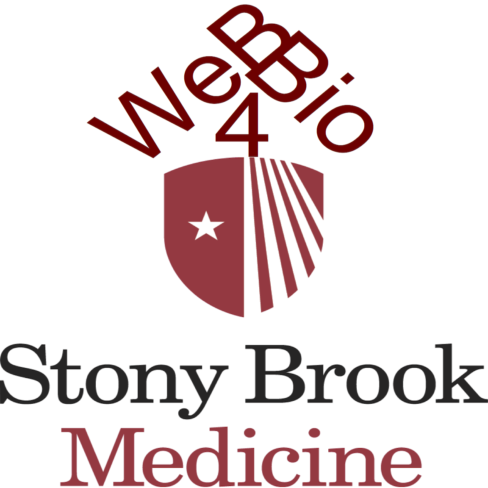

Web & Data Science for BioMedicine 2017
2nd annual immersive workshop on Web Technologies and Data Science for Biomedical Research
Stony Brook University, 9am-5pm, Aug 21-22, 2017, Charles B. Wang Center room #101
Who
This immersive, data-driven, team-based, problem-solving workshop is organized by
The Dept Biomedical Informatics of Stony Brook University.
It will be led by
Jonas Almeida, and is based on material and teaching practice developed by participation in international
Summer Data Science Schools,
Data Storms, and ongoing
weekly hackatons organized over several years in three different universities (started at Rice University, Houston TX in 2010)
Why
For a while it has been predicted that "
beyond the data deluge" we would find a new quantitative landscape where the computational analysis finds its way to the (Big) data: the code rather than the data does the travelling, accross a
smart computational landscape that is both syntatically and semantically interoperable.
That future is now.
From the
Cancer Genome Atlas to
Public Health, from
wearable sensors to NCI's
fire cloud, and from
patient centric Apps to
interoperable medical records, we see a new ubiquitous computational ecosystem awash in data and in opportunities to advance
Precision Medicine.
What
This hands-on workshop familiarizes the participants with the trans-disciplinary intersection between Data Science and Web Technologies. Specifically, it engages reference data sources and analytical workflows without leaving the portable and reproducible confines of the
Web Platform.
Each participant will be coached into the adoption of social coding habits (we'll use
github) and, in small groups of no more than 3, approach the analysis of a Big Data source of their chosing.
Along the way, each group will be assisted in learning how to use
Web Platform and and a rapidly growing toolbox of bioinformatics components. The goal of these immersive projects is to make the most of both the rich interactive graphics of the modern web browser and of scalable reference Cloud Computing resources being advanced by
NIH,
NSF,
CDC, and many other
national and
international agencies.
In a nutshell, the goal will be to learn how to use reference Big Data to make sense of one's research driven "small data". For those inclined to explore
Biology's dry future, there will be the option of focusing on the development of Web Apps and Web Services (
nodejs) as the immersive hands-on project.
How
The way in which open linked data architectures are transforming both basic and translational research in the Life Sciences follows a broader trans-disciplinary pattern that drives the evolution of the Web into a global computational space.
A particularly distinctive feature of these transformations is their domain-facing nature, which shortens the distance between those that produce the data and those that ultimately consume the results of its analysis, in the process sustaining an
API economy.
As always, there is a price to pay. At a very practical level, the participation in this workshop will involve familiarization with the Web's assemply language,
JavaScript.
For those who hesitate before plunging into (yet another) computer language, remember this is not only the most widely used language today, it supports the largest open source server and client side codebase, and is the main language being taught in secondary education to achieve
foundational computer literacy.
Registration
- Registration.
- Get a github account.
- Ideally, get at least minimal familiarity with JavaScript, say, through freeCodeCamp (preferred), code academy or MDN. If you prefer something with videos, Udacity may help.